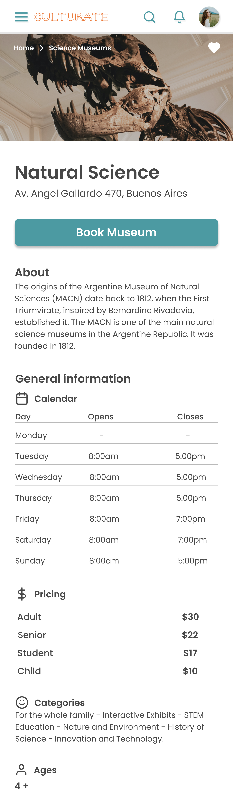
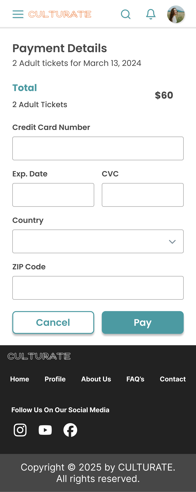

Final Product







CULTURATE is a mobile web application designed to help users discover museums across Buenos Aires, Argentina, and plan cultural experiences in a simple and accessible way.
The platform centralizes museum information and allows users to explore options based on their interests, location, and availability without requiring account creation or upfront payment.
The goal was to reduce friction in the discovery process and encourage users to engage with cultural experiences more easily.
Exploring cultural activities in a large city like Buenos Aires can be challenging:
This creates friction in the discovery process and limits access to cultural experiences.
UX/UI Designer collaborating within a cross functional team.
The team followed a user centered design process focused on reducing friction and improving accessibility.
The final product enables users to:
The platform balances accessibility for new users with additional functionality for returning users.
Usability testing was conducted across all stages of the design process.
The final high fidelity prototype was validated with users, resulting in a more intuitive and effective experience.
This project reinforced the value of collaboration and continuous validation.
Working within a multidisciplinary team required clear communication, alignment, and shared ownership of decisions.
Iterative testing played a key role in refining the experience and ensuring that the final solution addressed real user needs.

